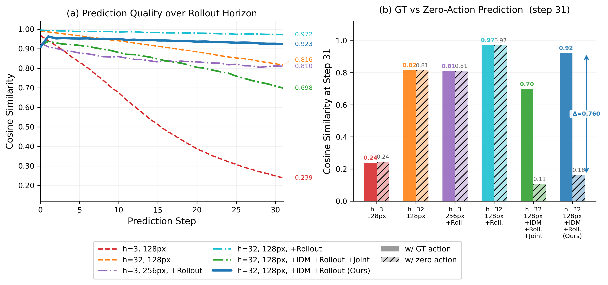
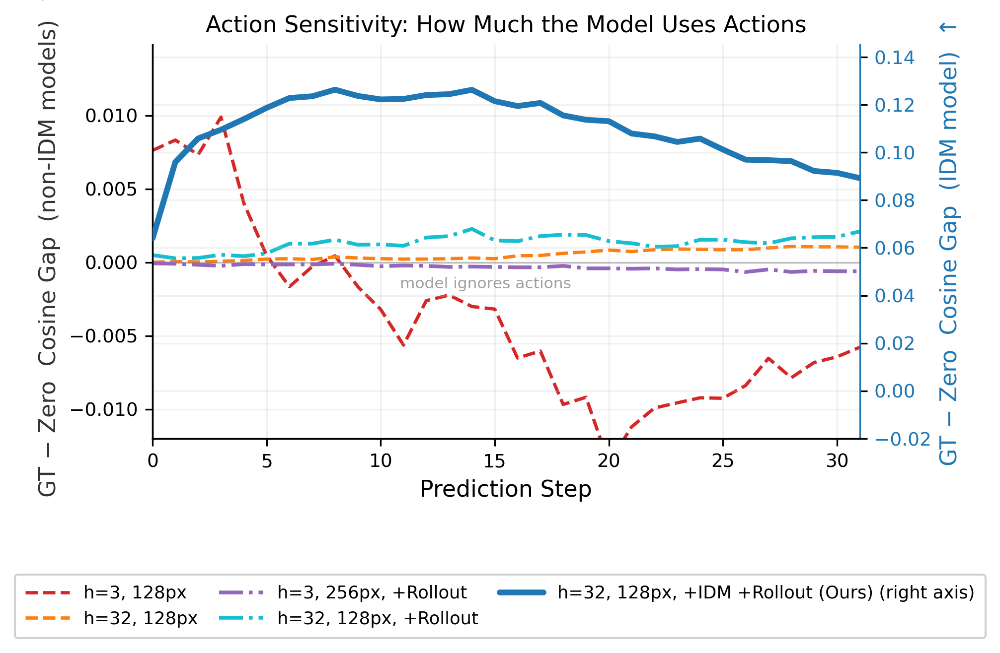
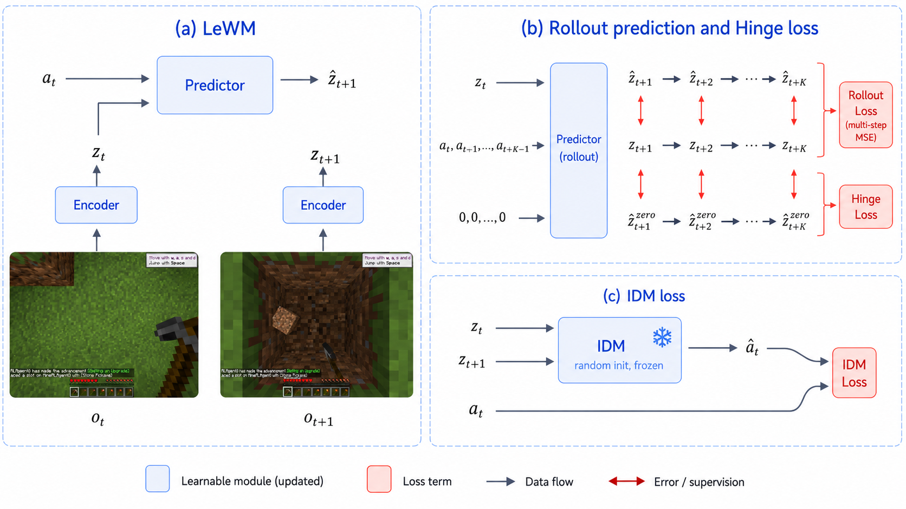
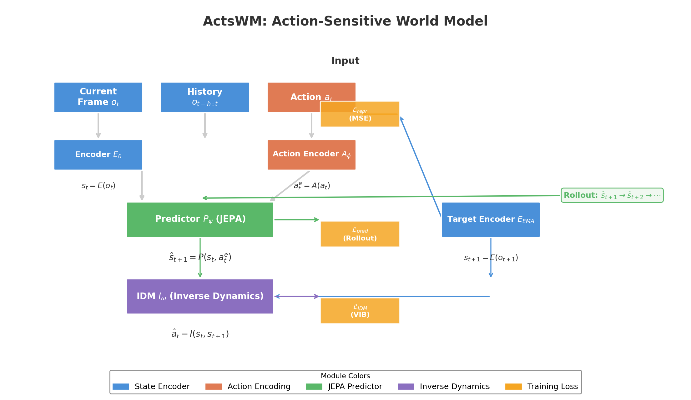
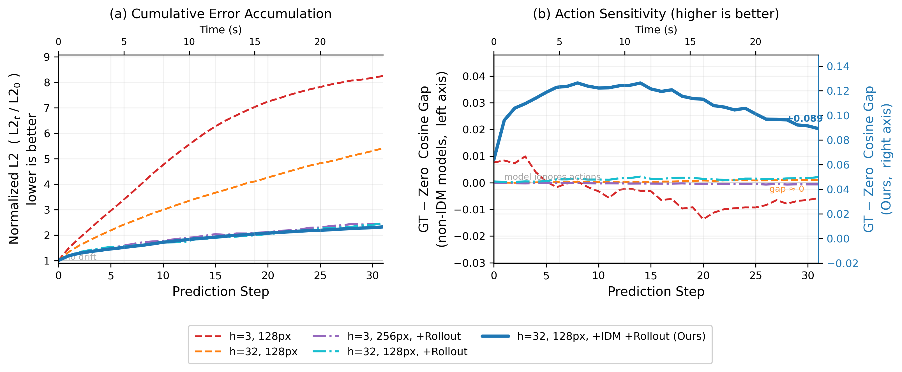
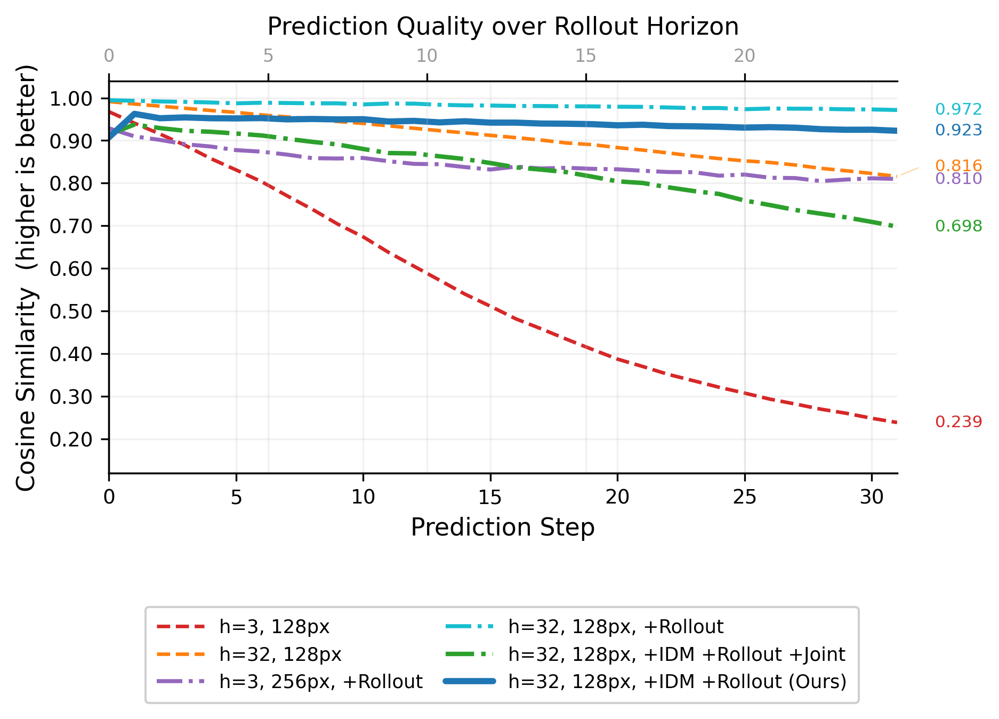
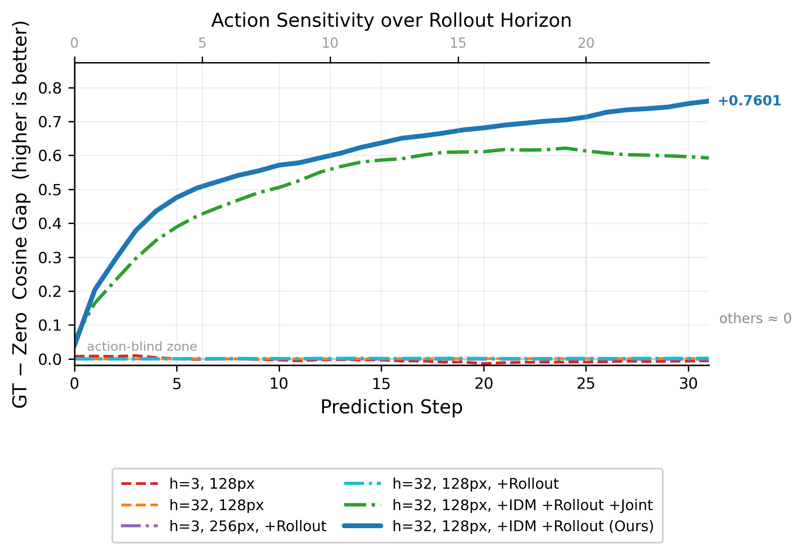
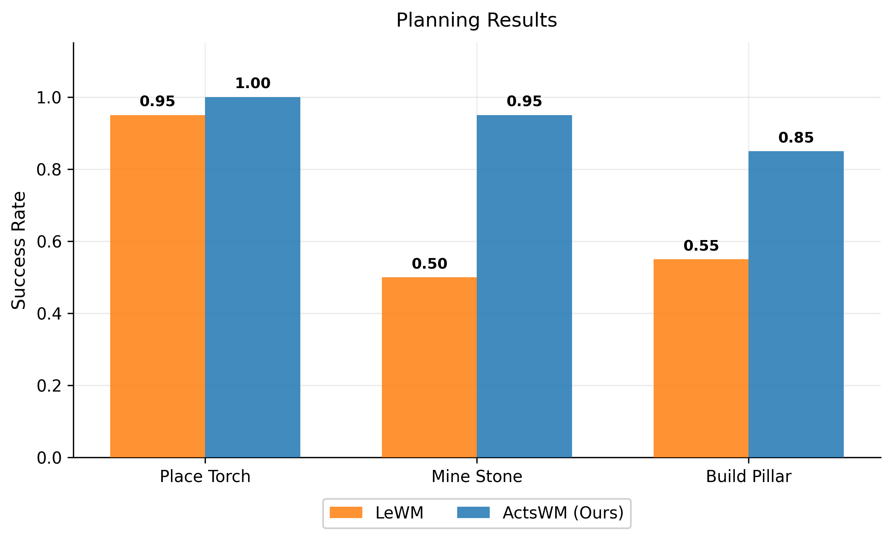
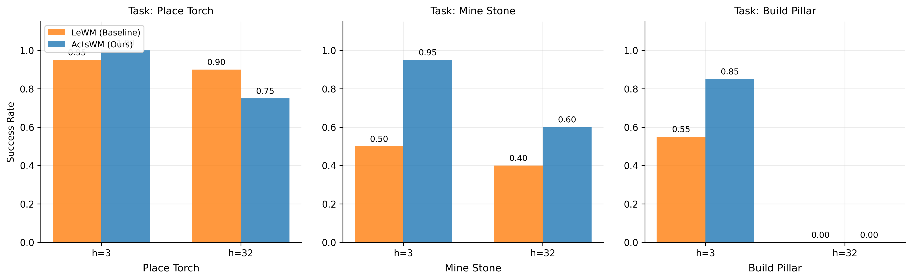
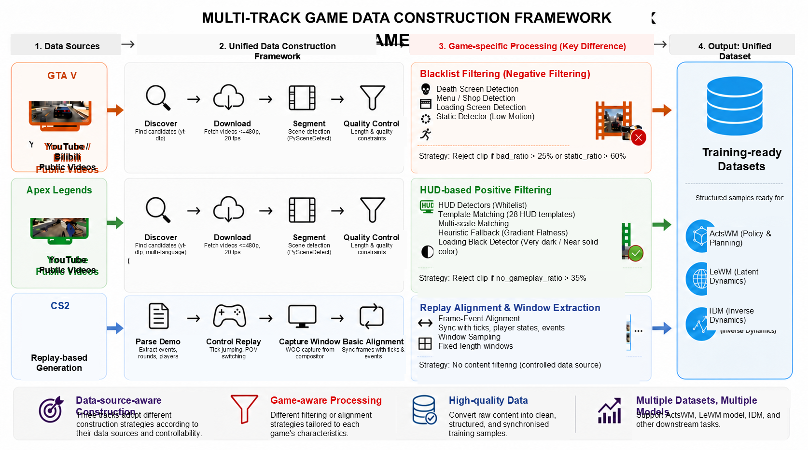

arXiv: 2607.26712
ActSWM: Action-Sensitive World Models for Long-Horizon Planning in Open-World Games
Action-sensitive latent rollouts for long-horizon planning, cross-game action recovery, and scalable pseudo-labeling.
ActSWM identifies Context Collapse in JEPA-style latent world models and preserves action-conditioned rollout separation for long-horizon planning.

ActSWM preserves action-conditioned rollout separation under long horizons, avoiding the action-insensitive collapse seen in stronger-context LeWM baselines.
Abstract
Latent world models such as Dreamer, TD-MPC, and JEPA-style predictors enable efficient planning by optimizing future controls in representation space. Yet prediction accuracy alone does not guarantee that planned actions still change imagined futures in a useful way. We identify Context Collapse: with stronger visual context, autoregressive latent predictors can keep high future-state similarity while becoming nearly invariant to different action sequences.
ActSWM builds on LeWM-style representation-space prediction, but treats action sensitivity as a geometric constraint rather than an auxiliary readout. Unlike joint inverse-dynamics objectives that can co-adapt with the encoder, ActSWM couples rollout separation pressure with a fixed inverse-dynamics constraint so alternative-action futures stay distinguishable over long horizons.
Across step-drift diagnosis on VPT Minecraft trajectories, closed-loop MineStudio planning, and cross-game local action recovery against D2E G-IDM, ActSWM preserves larger action gaps, improves multi-step task success, and supports scalable action pseudo-labeling from unlabeled gameplay videos.
Method
Context Collapse
Prior latent planners (PlaNet, Dreamer, TD-MPC, LeWM) largely optimize future-state fidelity. Longer context or multi-step rollout losses can reduce compounding error, but they do not automatically keep action conditioning alive: the predictor may extrapolate state progression from visual history while becoming insensitive to candidate controls.
This is distinct from classic exposure bias. For planning, it is deeper: if ground-truth-action and alternative-action rollouts collapse together, CEM-style planners cannot compare downstream consequences of different action sequences.

ActSWM Design
ActSWM inherits JEPA / LeWM representation-space prediction, then adds rollout-level separation and a non-adaptive action constraint inspired by inverse-dynamics ideas (e.g., WAM) while avoiding joint encoder–readout co-adaptation.

Figure 1 (paper): Overview of ActSWM — from context collapse to action-sensitive latent rollouts, planning, and cross-game action recovery.
1. Prediction Backbone
A JEPA-style latent predictor (LeWM lineage) forecasts future representations in action-conditioned latent space rather than pixels.
2. Rollout Separation
A hinge-style separation loss keeps true-action and alternative-action futures distinguishable across multi-step rollouts.
3. Fixed IDM Constraint
A frozen inverse-dynamics readout makes action recovery a stable geometric constraint on latent transitions, unlike jointly trained IDM auxiliaries.

ActSWM turns action sensitivity into an explicit training and evaluation objective, not only a byproduct of better prediction fidelity.
Experiment 1: Diagnosing Context Collapse
Using offline Minecraft H5 trajectories from VPT, we test whether stronger context and multi-step rollout objectives preserve action-conditioned separation. The key metric is not only future-state similarity, but the action gap between ground-truth-action and alternative-action rollouts—exactly the quantity a planner needs when comparing candidate futures.
| # | Model Variant | History ctx | Resolution | Rollout Loss | IDM | IDM Frozen |
|---|---|---|---|---|---|---|
| 1 | LeWM-128-ctx3 | 3 | 128 | ✗ | ✗ | ✗ |
| 2 | LeWM-128-ctx32 | 32 | 128 | ✗ | ✗ | ✗ |
| 3 | LeWM-128-ctx32-rollout | 32 | 128 | ✓ | ✗ | ✗ |
| 4 | LeWM-256-ctx3-rollout | 3 | 256 | ✓ | ✗ | ✗ |
| 5 | LeWM + Joint IDM | 32 | 128 | ✓ | ✓ | ✗ |
| 6 | ActSWM | 32 | 128 | ✓ | ✓ | ✓ |

ActSWM preserves a much larger action gap than LeWM variants while maintaining strong rollout quality under long contexts.

Future-state cosine similarity across rollout steps.

Action gap — separability between recorded- and alternative-action rollouts.
Experiment 2: Closed-Loop Planning
We close the loop with CEM planning in MineStudio, in the spirit of model-predictive control used by latent planners such as Dreamer and TD-MPC. The question is whether action-sensitive rollouts improve real task success over a LeWM baseline, especially on multi-step behaviors rather than near-saturated short skills.

Torch placement is nearly saturated, while stone mining and pillar building show the clearest gains from more reliable action-conditioned rollouts.

Success-rate breakdown per task: ActSWM leads on every task, with the largest margins where action sequences matter most.
| Model | Place Torch | Mine Stone | Build Pillar | Avg. |
|---|---|---|---|---|
| LeWM | 95% | 50% | 55% | 67% |
| ActSWM | 100% | 95% | 85% | 93% |
Experiment 3: Cross-Game Local Action Recovery
Beyond Minecraft planning, we ask whether ActSWM learns action-recoverable dynamics useful for video understanding and pseudo-labeling—extending inverse-dynamics ideas from models such as WAM into multi-step latent rollouts. On CS2, GTA V, and Apex Legends video windows, we compare against LeWM and the strong video inverse-dynamics baseline D2E G-IDM.
| Game | Method | CEM ↓ | Rand. | Gap ↑ | Key ↑ |
|---|---|---|---|---|---|
| CS2 | D2E G-IDM | — | — | — | 66.8% |
| CS2 | LeWM | 5.43 | 31.88 | 26.45 | 79.9% |
| CS2 | ActSWM | 14.25 | 26.83 | 12.58 | 85.1% |
| GTA V | D2E G-IDM | — | — | — | 83.7% |
| GTA V | LeWM | 55.57 | 59.83 | 4.26 | 91.0% |
| GTA V | ActSWM | 28.54 | 63.25 | 34.71 | 88.6% |
| Apex Legends | D2E G-IDM | — | — | — | 67.1% |
| Apex Legends | LeWM | 11.91 | 12.87 | 0.96 | 73.4% |
| Apex Legends | ActSWM | 22.29 | 92.85 | 70.56 | 78.6% |
ActSWM improves cross-game action recovery quality and strengthens the case for pseudo-labeling from unlabeled gameplay videos.
Data Pipelines
Game-agent lines such as VPT, STEVE-1, MineDojo, and Voyager show the value of large-scale gameplay supervision, but trainable action-aligned data still requires substantial systems work. For ActSWM, the pipelines fall into two regimes: GTA V and Apex Legends share a public-video acquisition scaffold with discovery, download, scene segmentation, filtering, and export, while CS2 uses a replay-driven, high-control POV capture system. Together they support world-model training, inverse-dynamics supervision, and cross-game evaluation without treating all games as the same data source.

| Game | Data Source | Core Pipeline | Key Logic | Output | Engineering Focus |
|---|---|---|---|---|---|
| GTA V | YouTube / Bilibili + curated seeds | Discover → Download → Scene Segment → Blacklist Filter → Export | Four lightweight detectors reject death, menu, loading, and static clips | Clean clips + manifest + resume logs | Large-scale public-video cleaning with parallel resumable execution |
| Apex Legends | YouTube + curated seeds | Discover → Download → Scene Segment → HUD Whitelist → Export | Positive gameplay confirmation via combat HUD template matching with heuristic fallback | Clean clips + manifest + resume logs | Same scaffold as GTA, but filtering philosophy is reversed |
| CS2 | Competitive replay demos | Parse Demo → Launch / Hook → Tick Control → Capture POV → Encode | Programmatic replay control with synchronized per-player, per-round recording | Structured POV videos + downstream aligned data | High-control automatic capture rather than public-video scraping |
GTA V Pipeline
Goal: Build a large clean clip corpus from public GTA V gameplay videos for IDM and world-model training.
Pipeline: The system discovers candidates from keyword search and trusted seed URLs, downloads videos at constrained resolution, applies PySceneDetect-based scene segmentation, and runs four lightweight frame-level detectors before policy-level clip decisions.
Why it matters: GTA is the reference public-video pipeline: a blacklist strategy explicitly enumerates bad content such as death screens, menu / shop views, loading screens, and low-motion clips, then exports only the retained segments with manifest-backed resumability.
Apex Legends Pipeline
Goal: Mine combat-valid Apex gameplay from public videos while preserving short, rapid, high-action segments.
Pipeline: Apex reuses the GTA acquisition scaffold — multi-language discovery, download, and scene segmentation — but replaces blacklist filtering with a primary hud_gameplay detector plus loading-screen rejection.
Why it matters: The filtering philosophy is reversed: instead of enumerating bad frames, the pipeline positively confirms gameplay through combat HUD cues (template matching over ammo, squads-left, compass, and direction markers, with heuristic fallback when templates are insufficient). This avoids discarding true combat clips just because motion-based rules fail under fast camera changes.
CS2 Pipeline
Goal: Collect controlled first-person competitive footage directly from replay demos rather than scrape uncontrolled public videos.
Pipeline: The system parses CS2 demos, launches the game through HLAE-style hooks, issues tick-level replay commands through a demo-control plugin, captures per-player POV streams with Windows Graphics Capture, and encodes the result into per-round video outputs.
Why it matters: CS2 is fundamentally a high-control capture stack, not a public-video cleaning line. It yields reproducible per-player, per-round recordings that can later be aligned into downstream supervision and pseudo-labeling workflows.
Contributions
1. ActSWM
A JEPA-style action-sensitive world model that keeps long-horizon latent rollouts responsive to action differences rather than collapsing into action-agnostic futures.
2. Planning & Recovery
Stronger MineStudio planning over LeWM, larger long-horizon action gaps, and better cross-game recovery than video IDM baselines such as D2E G-IDM.
3. Data Systems Support
Three game-aware pipelines spanning public-video cleaning and replay-driven sample generation for scalable training and action pseudo-labeling.
BibTeX
@misc{actswm2026,
title = {ActSWM: Action-Sensitive World Models for Long-Horizon Planning in Open-World Games},
author = {Gan, Zhenfeng and Zeng, ZiTong and Cheng, Jiajun and Song, Yeke and Tang, Yongyi and Wang, Xueqian},
year = {2026},
eprint = {2607.26712},
archivePrefix = {arXiv},
primaryClass = {cs.RO}
}If you find this project page useful, please cite our paper: arXiv:2607.26712.
© 2026 ActSWM. arXiv: 2607.26712. Built with Bootstrap 5.